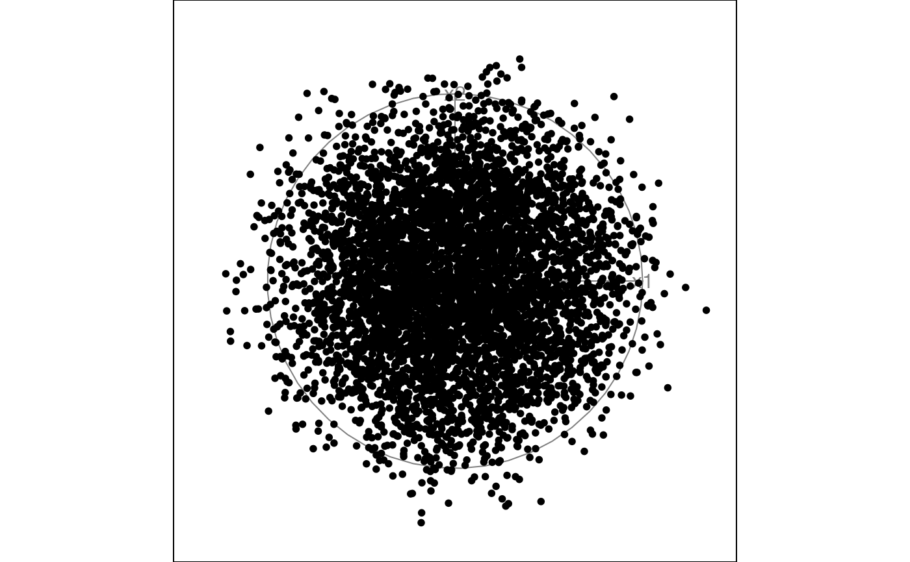
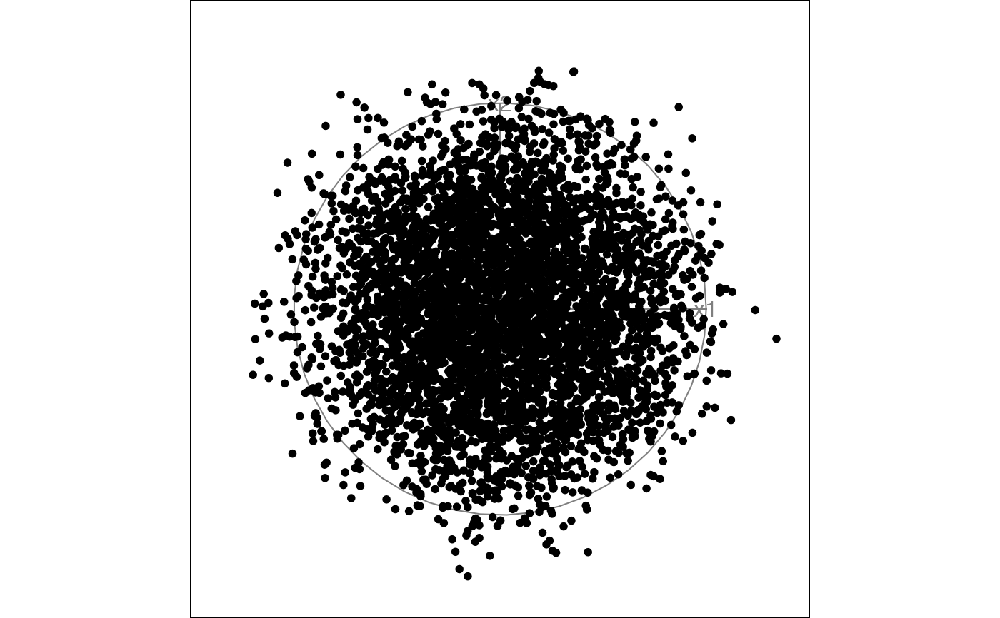
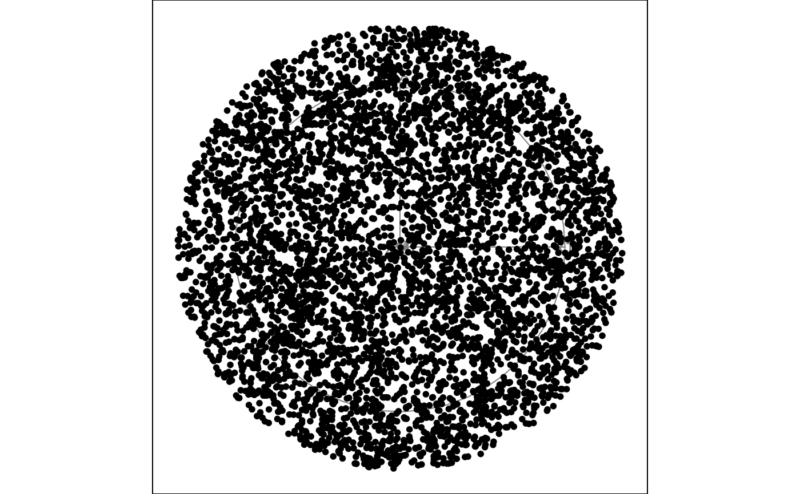
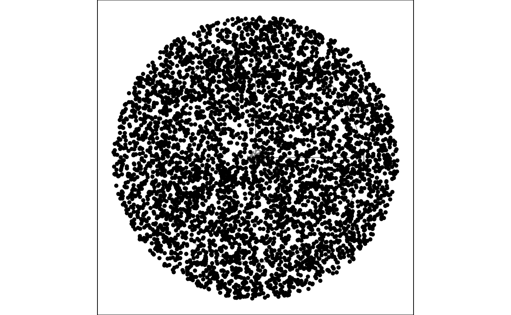

Animate a 2D tour path with a sage scatterplot that uses a radial transformation on the projected points to re-allocate the volume projected across the 2D plane.
Usage
display_sage(
axes = "center",
half_range = NULL,
col = "black",
pch = 20,
gam = 1,
R = NULL,
palette = "Zissou 1",
axislablong = FALSE,
...
)
animate_sage(data, tour_path = grand_tour(), ...)Arguments
- axes
position of the axes: center, bottomleft or off
- half_range
half range to use when calculating limits of projected. If not set, defaults to maximum distance from origin to each row of data.
- col
color to use for points, can be a vector or hexcolors or a factor. Defaults to "black".
- pch
marker for points. Defaults to 20.
- gam
scaling of the effective dimensionality for rescaling. Defaults to 1.
- R
scale for the radial transformation. If not set, defaults to maximum distance from origin to each row of data.
- palette
name of color palette for point colour, used by
hcl.colors, default "Zissou 1"- axislablong
text labels only for the long axes in a projection, default FALSE
- ...
other arguments passed on to
animateanddisplay_sage- data
matrix, or data frame containing numeric columns
- tour_path
tour path generator, defaults to 2d grand tour
Examples
# Generate uniform samples in a 10d sphere using the geozoo package
sphere10 <- geozoo::sphere.solid.random(10)$points
# Columns need to be named before launching the tour
colnames(sphere10) <- paste0("x", 1:10)
# Standard grand tour display, points cluster near center
animate_xy(sphere10)
#> Using half_range 1


# Sage display, points are uniformly distributed across the disk
animate_sage(sphere10)
#> Using half_range 1
#> Using half_range 1

